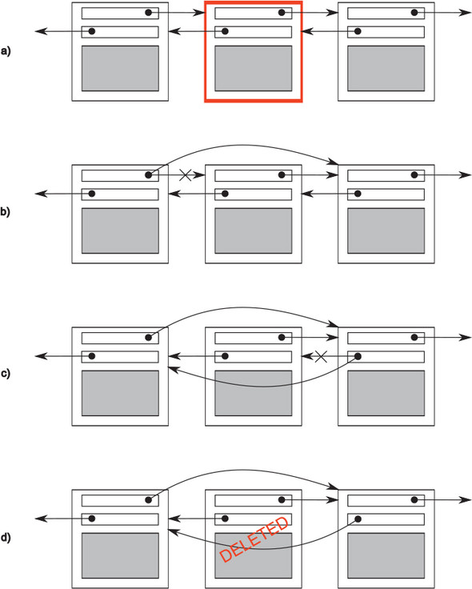
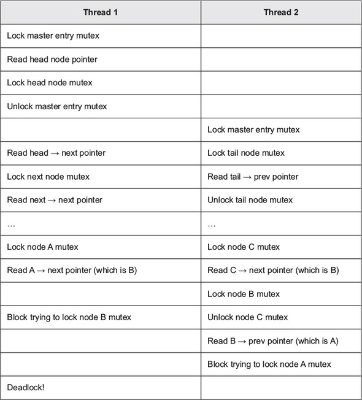

One of the key benefits of using threads for concurrency is the potential to easily and directly share data between them, so now that we’ve covered starting and managing threads, let’s look at the issues surrounding shared data.
Imagine for a moment that you’re sharing an apartment with a friend. There’s only one kitchen and one bathroom. Unless you’re particularly friendly, you can’t both use the bathroom at the same time, and if your roommate occupies the bathroom for a long time, it can be frustrating if you need to use it. Likewise, though it might be possible to both cook meals at the same time, if you have a combined oven and grill, it’s not going to end well if one of you tries to grill some sausages at the same time as the other is baking a cake. Furthermore, we all know the frustration of sharing a space and getting halfway through a task only to find that someone has borrowed something we need or changed something from the way we left it.
It’s the same with threads. If you’re sharing data between threads, you need to have rules for which thread can access which bit of data when, and how any updates are communicated to the other threads that care about that data. The ease with which data can be shared between multiple threads in a single process is not only a benefit—it can also be a big drawback. Incorrect use of shared data is one of the biggest causes of concurrency-related bugs, and the consequences can be far worse than sausage-flavored cakes.
This chapter is about sharing data safely between threads in C++, avoiding the potential problems that can arise, and maximizing the benefits.
When it comes down to it, the problems with sharing data between threads are all due to the consequences of modifying data. If all shared data is read-only, there’s no problem, because the data read by one thread is unaffected by whether or not another thread is reading the same data. But if data is shared between threads, and one or more threads start modifying the data, there’s a lot of potential for trouble. In this case, you must take care to ensure that everything works out OK.
One concept that’s widely used to help programmers reason about their code is invariants—statements that are always true about a particular data structure, such as “this variable contains the number of items in the list.” These invariants are often broken during an update, especially if the data structure is of any complexity or the update requires modification of more than one value.
Consider a doubly linked list, where each node holds a pointer to both the next node in the list and the previous one. One of the invariants is that if you follow a “next” pointer from one node (A) to another (B), the “previous” pointer from that node (B) points back to the first node (A). In order to remove a node from the list, the nodes on either side have to be updated to point to each other. Once one has been updated, the invariant is broken until the node on the other side has been updated too; after the update has completed, the invariant holds again.
The steps in deleting an entry from such a list are shown in figure 3.1:

As you can see in figure 3.1, between steps b and c, the links going in one direction are inconsistent with the links going in the opposite direction, and the invariant is broken.
The simplest potential problem with modifying data that’s shared between threads is that of broken invariants. If you don’t do anything special to ensure otherwise, if one thread is reading the doubly linked list while another is removing a node, it’s quite possible for the reading thread to see the list with a node only partially removed (because only one of the links has been changed, as in step b of figure 3.1), so the invariant is broken. The consequences of this broken invariant can vary; if the other thread is reading the list items from left to right in the diagram, it will skip the node being deleted. On the other hand, if the second thread is trying to delete the rightmost node in the diagram, it might end up permanently corrupting the data structure and eventually crashing the program. Whatever the outcome, this is an example of one of the most common causes of bugs in concurrent code: a race condition.
Suppose you’re buying tickets to see a movie at the movie theater. If it’s a big theater, multiple cashiers will be taking money so more than one person can buy tickets at the same time. If someone at another cashier’s desk is also buying tickets for the same movie as you are, which seats are available for you to choose from depends on whether the other person books first or you do. If there are only a few seats left, this difference can be quite crucial: it might literally be a race to see who gets the last tickets. This is an example of a race condition: which seats you get (or even whether you get tickets) depends on the relative ordering of the two purchases.
In concurrency, a race condition is anything where the outcome depends on the relative ordering of execution of operations on two or more threads; the threads race to perform their respective operations. Most of the time, this is quite benign because all possible outcomes are acceptable, even though they may change with different relative orderings. For example, if two threads are adding items to a queue for processing, it generally doesn’t matter which item gets added first, provided that the invariants of the system are maintained. It’s when the race condition leads to broken invariants that there’s a problem, such as with the doubly linked list example mentioned. When talking about concurrency, the term race condition is usually used to mean a problematic race condition; benign race conditions aren’t so interesting and aren’t a cause of bugs. The C++ Standard also defines the term data race to mean the specific type of race condition that arises because of concurrent modification to a single object (see section 5.1.2 for details); data races cause the dreaded undefined behavior.
Problematic race conditions typically occur where completing an operation requires modification of two or more distinct pieces of data, such as the two link pointers in the example. Because the operation must access two separate pieces of data, these must be modified in separate instructions, and another thread could potentially access the data structure when only one of them has been completed. Race conditions can often be hard to find and hard to duplicate because the window of opportunity is small. If the modifications are done as consecutive CPU instructions, the chance of the problem exhibiting on any one run-through is small, even if the data structure is being accessed by another thread concurrently. As the load on the system increases, and the number of times the operation is performed increases, the chance of the problematic execution sequence occurring also increases. It’s almost inevitable that such problems will show up at the most inconvenient time. Because race conditions are generally timing-sensitive, they can often disappear entirely when the application is run under the debugger, because the debugger affects the timing of the program, even if only slightly.
If you’re writing multithreaded programs, race conditions can easily be the bane of your existence; a great deal of the complexity in writing software that uses concurrency comes from avoiding problematic race conditions.
There are several ways to deal with problematic race conditions. The simplest option is to wrap your data structure with a protection mechanism to ensure that only the thread performing a modification can see the intermediate states where the invariants are broken. From the point of view of other threads accessing that data structure, such modifications either haven’t started or have completed. The C++ Standard Library provides several of these mechanisms, which are described in this chapter.
Another option is to modify the design of your data structure and its invariants so that modifications are done as a series of indivisible changes, each of which preserves the invariants. This is generally referred to as lock-free programming and is difficult to get right. If you’re working at this level, the nuances of the memory model and identifying which threads can potentially see which set of values can get complicated. The memory model is covered in chapter 5, and lock-free programming is discussed in chapter 7.
Another way of dealing with race conditions is to handle the updates to the data structure as a transaction, just as updates to a database are done within a transaction. The required series of data modifications and reads is stored in a transaction log and then committed in a single step. If the commit can’t proceed because the data structure has been modified by another thread, the transaction is restarted. This is termed software transactional memory (STM), and it’s an active research area at the time of writing. It won’t be covered in this book, because there’s no direct support for STM in C++ (though there is a Technical Specification for Transactional Memory Extensions to C++[1]). But the basic idea of doing something privately and then committing in a single step is something that I’ll come back to later.
ISO/IEC TS 19841:2015—Technical Specification for C++ Extensions for Transactional Memory http://www.iso.org/iso/home/store/catalogue_tc/catalogue_detail.htm?csnumber=66343.
The most basic mechanism for protecting shared data provided by the C++ Standard is the mutex, so we’ll look at that first.
So, you have a shared data structure such as the linked list from the previous section, and you want to protect it from race conditions and the potential broken invariants that can ensue. Wouldn’t it be nice if you could mark all the pieces of code that access the data structure as mutually exclusive, so that if any thread was running one of them, any other thread that tried to access that data structure had to wait until the first thread was finished? That would make it impossible for a thread to see a broken invariant except when it was the thread doing the modification.
Well, this isn’t a fairy tale wish—it’s precisely what you get if you use a synchronization primitive called a mutex (mutual exclusion). Before accessing a shared data structure, you lock the mutex associated with that data, and when you’ve finished accessing the data structure, you unlock the mutex. The Thread Library then ensures that once one thread has locked a specific mutex, all other threads that try to lock the same mutex have to wait until the thread that successfully locked the mutex unlocks it. This ensures that all threads see a self-consistent view of the shared data, without any broken invariants.
Mutexes are the most general of the data-protection mechanisms available in C++, but they’re not a silver bullet; it’s important to structure your code to protect the right data (see section 3.2.2) and avoid race conditions inherent in your interfaces (see section 3.2.3). Mutexes also come with their own problems in the form of a deadlock (see section 3.2.4) and protecting either too much or too little data (see section 3.2.8). Let’s start with the basics.
In C++, you create a mutex by constructing an instance of std::mutex, lock it with a call to the lock() member function, and unlock it with a call to the unlock() member function. But it isn’t recommended practice to call the member functions directly, because this means that you have to remember to call unlock() on every code path out of a function, including those due to exceptions. Instead, the Standard C++ Library provides the std::lock_guard class template, which implements that RAII idiom for a mutex; it locks the supplied mutex on construction and unlocks it on destruction, ensuring a locked mutex is always correctly unlocked. The following listing shows how to protect a list that can be accessed by multiple threads using std::mutex, along with std::lock_guard. Both of these are declared in the <mutex> header.
#include <list>
#include <mutex>
#include <algorithm>
std::list<int> some_list; 1
std::mutex some_mutex; 2
void add_to_list(int new_value)
{
std::lock_guard<std::mutex> guard(some_mutex); 3
some_list.push_back(new_value);
}
bool list_contains(int value_to_find)
{
std::lock_guard<std::mutex> guard(some_mutex); 4
return std::find(some_list.begin(),some_list.end(),value_to_find)
!= some_list.end();
}
In listing 3.1, there’s a single global variable 1, and it’s protected with a corresponding global instance of std::mutex 2. The use of std::lock_guard<std::mutex> in add_to_list() 3, and again in list_contains() 4, means that the accesses in these functions are mutually exclusive: list_contains() will never see the list partway through a modification by add_to_list().
C++17 has a new feature called class template argument deduction, which means that for simple class templates like std::lock_guard, the template argument list can often be omitted. 3 and 4 can be reduced to
std::lock_guard guard(some_mutex);
on a C++17 compiler. As we will see in section 3.2.4, C++17 also introduces an enhanced version of lock guard called std::scoped_lock, so in a C++17 environment, this may well be written as
std::scoped_lock guard(some_mutex);
For clarity of code and compatibility with older compilers, I’ll continue to use std::lock_guard and specify the template arguments in other code snippets.
Although there are occasions where this use of global variables is appropriate, in the majority of cases it’s common to group the mutex and the protected data together in a class rather than use global variables. This is a standard application of object-oriented design rules: by putting them in a class, you’re clearly marking them as related, and you can encapsulate the functionality and enforce the protection. In this case, the add_to_list and list_contains functions would become member functions of the class, and the mutex and protected data would both become private members of the class, making it much easier to identify which code has access to the data and thus which code needs to lock the mutex. If all the member functions of the class lock the mutex before accessing any other data members and unlock it when done, the data is nicely protected from all comers.
Well, that’s not quite true, as the astute among you will have noticed: if one of the member functions returns a pointer or reference to the protected data, then it doesn’t matter that the member functions all lock the mutex in a nice, orderly fashion, because you’ve blown a big hole in the protection. Any code that has access to that pointer or reference can now access (and potentially modify) the protected data without locking the mutex. Protecting data with a mutex therefore requires careful interface design to ensure that the mutex is locked before there’s any access to the protected data and that there are no backdoors.
As you’ve seen, protecting data with a mutex is not quite as easy as slapping an std::lock_guard object in every member function; one stray pointer or reference, and all that protection is for nothing. At one level, checking for stray pointers or references is easy; as long as none of the member functions return a pointer or reference to the protected data to their caller either via their return value or via an out parameter, the data is safe. If you dig a little deeper, it’s not that straightforward—nothing ever is. As well as checking that the member functions don’t pass out pointers or references to their callers, it’s also important to check that they don’t pass these pointers or references in to functions they call that aren’t under your control. This is just as dangerous: those functions might store the pointer or reference in a place where it can later be used without the protection of the mutex. Particularly dangerous in this regard are functions that are supplied at runtime via a function argument or other means, as in the next listing.
class some_data
{
int a;
std::string b;
public:
void do_something();
};
class data_wrapper
{
private:
some_data data;
std::mutex m;
public:
template<typename Function>
void process_data(Function func)
{
std::lock_guard<std::mutex> l(m);
func(data); 1
}
};
some_data* unprotected;
void malicious_function(some_data& protected_data)
{
unprotected=&protected_data;
}
data_wrapper x;
void foo()
{
x.process_data(malicious_function); 2
unprotected->do_something(); 3
}
In this example, the code in process_data looks harmless enough, nicely protected with std::lock_guard, but the call to the user-supplied func function 1 means that foo can pass in malicious_function to bypass the protection 2 and then call do_something() without the mutex being locked 3.
Fundamentally, the problem with this code is that it hasn’t done what you set out to do: mark all the pieces of code that access the data structure as mutually exclusive. In this case, it missed the code in foo() that calls unprotected->do_something(). Unfortunately, this part of the problem isn’t something the C++ Thread Library can help you with; it’s up to you as programmers to lock the right mutex to protect your data. On the upside, you have a guideline to follow, which will help you in these cases: Don’t pass pointers and references to protected data outside the scope of the lock, whether by returning them from a function, storing them in externally visible memory, or passing them as arguments to user-supplied functions.
Although this is a common mistake when trying to use mutexes to protect shared data, it’s far from the only potential pitfall. As you’ll see in the next section, it’s still possible to have race conditions, even when data is protected with a mutex.
Just because you’re using a mutex or other mechanism to protect shared data, it doesn’t mean you’re protected from race conditions; you still have to ensure that the appropriate data is protected. Consider the doubly linked list example again. In order for a thread to safely delete a node, you need to ensure that you’re preventing concurrent accesses to three nodes: the node being deleted and the nodes on either side. If you protected access to the pointers of each node individually, you’d be no better off than with code that used no mutexes, because the race condition could still happen—it’s not the individual nodes that need protecting for the individual steps but the whole data structure, for the whole delete operation. The easiest solution in this case is to have a single mutex that protects the entire list, as in listing 3.1.
Just because individual operations on the list are safe, you’re not out of the woods yet; you can still get race conditions, even with a simple interface. Consider a stack data structure like the std::stack container adapter shown in listing 3.3. Aside from the constructors and swap(), there are only five things you can do to a std::stack: you can push() a new element onto the stack, pop() an element off the stack, read the top() element, check whether it’s empty(), and read the number of elements—the size() of the stack. If you change top() so that it returns a copy rather than a reference (so you’re following the guideline from section 3.2.2) and protect the internal data with a mutex, this interface is still inherently subject to race conditions. This problem is not unique to a mutex-based implementation; it’s an interface problem, so the race conditions would still occur with a lock-free implementation.
template<typename T,typename Container=std::deque<T> >
class stack
{
public:
explicit stack(const Container&);
explicit stack(Container&& = Container());
template <class Alloc> explicit stack(const Alloc&);
template <class Alloc> stack(const Container&, const Alloc&);
template <class Alloc> stack(Container&&, const Alloc&);
template <class Alloc> stack(stack&&, const Alloc&);
bool empty() const;
size_t size() const;
T& top();
T const& top() const;
void push(T const&);
void push(T&&);
void pop();
void swap(stack&&);
template <class... Args> void emplace(Args&&... args); 1
};
The problem here is that the results of empty() and size() can’t be relied on. Although they might be correct at the time of the call, once they’ve returned, other threads are free to access the stack and might push() new elements onto or pop() the existing ones off of the stack before the thread that called empty() or size() could use that information.
In particular, if the stack instance is not shared, it’s safe to check for empty() and then call top() to access the top element if the stack is not empty, as follows:
stack<int> s;
if(!s.empty()) 1
{
int const value=s.top(); 2
s.pop(); 3
do_something(value);
}
Not only is it safe in single-threaded code, it’s expected: calling top() on an empty stack is undefined behavior. With a shared stack object, this call sequence is no longer safe, because there might be a call to pop() from another thread that removes the last element in between the call to empty() 1 and the call to top() 2. This is therefore a classic race condition, and the use of a mutex internally to protect the stack contents doesn’t prevent it; it’s a consequence of the interface.
What’s the solution? Well, this problem happens as a consequence of the design of the interface, so the solution is to change the interface. But that still begs the question: what changes need to be made? In the simplest case, you could declare that top() will throw an exception if there aren’t any elements in the stack when it’s called. Though this directly addresses this issue, it makes for more cumbersome programming, because now you need to be able to catch an exception, even if the call to empty() returned false. This makes the call to empty() an optimization to avoid the overhead of throwing an exception if the stack is already empty (though if the state changes between the call to empty() and the call to top(), then the exception will still be thrown), rather than a necessary part of the design.
If you look closely at the previous snippet, there’s also potential for another race condition, but this time between the call to top() 2 and the call to pop() 3. Consider two threads running the previous snippet of code and both referencing the same stack object, s. This isn’t an unusual situation; when using threads for performance, it’s quite common to have several threads running the same code on different data, and a shared stack object is ideal for dividing work between them (though more commonly, a queue is used for this purpose—see the examples in chapters 6 and 7). Suppose that initially the stack has two elements, so you don’t have to worry about the race between empty() and top() on either thread, and consider the potential execution patterns.
If the stack is protected by a mutex internally, only one thread can be running a stack member function at any one time, so the calls get nicely interleaved, but the calls to do_something() can run concurrently. One possible execution is shown in table 3.1.
|
Thread A |
Thread B |
||
|---|---|---|---|
| if(!s.empty()) | |||
| if(!s.empty()) | |||
| int const value=s.top(); | |||
| int const value=s.top(); | |||
| s.pop(); | |||
| do_something(value); | s.pop(); | ||
| do_something(value); | |||
As you can see, if these are the only threads running, there’s nothing in between the two calls to top() to modify the stack, so both threads will see the same value. Not only that, but there are no calls to top() between the calls to pop(). Consequently, one of the two values on the stack is discarded without ever having been read, whereas the other is processed twice. This is yet another race condition and far more insidious than the undefined behavior of the empty()/top() race; there’s never anything obviously wrong going on, and the consequences of the bug are likely far removed from the cause, although they obviously depend on exactly what do_something() does.
This calls for a more radical change to the interface, one that combines the calls to top() and pop() under the protection of the mutex. Tom Cargill[2] pointed out that a combined call can lead to issues if the copy constructor for the objects on the stack can throw an exception. This problem was dealt with fairly comprehensively from an exception-safety point of view by Herb Sutter,[3] but the potential for race conditions brings something new to the mix.
Tom Cargill, “Exception Handling: A False Sense of Security,” in C++ Report 6, no. 9 (November–December 1994). Also available at http://www.informit.com/content/images/020163371x/supplements/Exception_Handling_Article.html.
Herb Sutter, Exceptional C++: 47 Engineering Puzzles, Programming Problems, and Solutions (Addison Wesley Professional, 1999).
For those of you who aren’t aware of the issue, consider stack<vector<int>>. Now, a vector is a dynamically sized container, so when you copy a vector, the library has to allocate some more memory from the heap in order to copy the contents. If the system is heavily loaded or there are significant resource constraints, this memory allocation can fail, so the copy constructor for vector might throw a std::bad_alloc exception. This is likely if the vector contains a lot of elements. If the pop() function was defined to return the value popped, as well as remove it from the stack, you have a potential problem: the value being popped is returned to the caller only after the stack has been modified, but the process of copying the data to return to the caller might throw an exception. If this happens, the data popped is lost; it has been removed from the stack, but the copy was unsuccessful! The designers of the std::stack interface helpfully split the operation in two: get the top element (top()) and then remove it from the stack (pop()), so that if you can’t safely copy the data, it stays on the stack. If the problem was lack of heap memory, maybe the application can free some memory and try again.
Unfortunately, it’s precisely this split that you’re trying to avoid in eliminating the race condition! Thankfully, there are alternatives, but they aren’t without cost.
The first option is to pass a reference to a variable in which you want to receive the popped value as an argument in the call to pop():
std::vector<int> result; some_stack.pop(result);
This works well for many cases, but it has the distinct disadvantage that it requires the calling code to construct an instance of the stack’s value type prior to the call, in order to pass this in as the target. For some types this is impractical, because constructing an instance is expensive in terms of time or resources. For other types this isn’t always possible, because the constructors require parameters that aren’t necessarily available at this point in the code. Finally, it requires that the stored type be assignable. This is an important restriction: many user-defined types do not support assignment, though they may support move construction or even copy construction (and allow return by value).
There’s only an exception safety problem with a value-returning pop() if the return by value can throw an exception. Many types have copy constructors that don’t throw exceptions, and with the new rvalue-reference support in the C++ Standard (see appendix A, section A.1), many more types will have a move constructor that doesn’t throw exceptions, even if their copy constructor does. One valid option is to restrict the use of your thread-safe stack to those types that can safely be returned by value without throwing an exception.
Although this is safe, it’s not ideal. Even though you can detect at compile time the existence of a copy or move constructor that doesn’t throw an exception using the std::is_nothrow_copy_constructible and std::is_nothrow_move_constructible type traits, it’s quite limiting. There are many more user-defined types with copy constructors that can throw and don’t have move constructors than there are types with copy and/or move constructors that can’t throw (although this might change as people get used to the rvalue-reference support in C++11). It would be unfortunate if such types couldn’t be stored in your thread-safe stack.
The third option is to return a pointer to the popped item rather than return the item by value. The advantage here is that pointers can be freely copied without throwing an exception, so you’ve avoided Cargill’s exception problem. The disadvantage is that returning a pointer requires a means of managing the memory allocated to the object, and for simple types such as integers, the overhead of such memory management can exceed the cost of returning the type by value. For any interface that uses this option, std::shared_ptr would be a good choice of pointer type; not only does it avoid memory leaks, because the object is destroyed once the last pointer is destroyed, but the library is in full control of the memory allocation scheme and doesn’t have to use new and delete. This can be important for optimization purposes: requiring that each object in the stack be allocated separately with new would impose quite an overhead compared to the original non-thread-safe version.
Flexibility should never be ruled out, especially in generic code. If you’ve chosen option 2 or 3, it’s relatively easy to provide option 1 as well, and this provides users of your code the ability to choose whichever option is most appropriate for them at little additional cost.
Listing 3.4 shows the class definition for a stack with no race conditions in the interface and that implements options 1 and 3: there are two overloads of pop(), one that takes a reference to a location in which to store the value and one that returns std::shared_ptr<>. It has a simple interface, with only two functions: push() and pop().
#include <exception>
#include <memory> 1
struct empty_stack: std::exception
{
const char* what() const noexcept;
};
template<typename T>
class threadsafe_stack
{
public:
threadsafe_stack();
threadsafe_stack(const threadsafe_stack&);
threadsafe_stack& operator=(const threadsafe_stack&) = delete; 2
void push(T new_value);
std::shared_ptr<T> pop();
void pop(T& value);
bool empty() const;
};
By paring down the interface you allow for maximum safety; even operations on the whole stack are restricted. The stack itself can’t be assigned, because the assignment operator is deleted 2 (see appendix A, section A.2), and there’s no swap() function. It can, however, be copied, assuming the stack elements can be copied. The pop() functions throw an empty_stack exception if the stack is empty, so everything still works even if the stack is modified after a call to empty(). As mentioned in the description of option 3, the use of std::shared_ptr allows the stack to take care of the memory-allocation issues and avoid excessive calls to new and delete if desired. Your five stack operations have now become three: push(), pop(), and empty(). Even empty() is superfluous. This simplification of the interface allows for better control over the data; you can ensure that the mutex is locked for the entirety of an operation. The following listing shows a simple implementation that’s a wrapper around std::stack<>.
#include <exception>
#include <memory>
#include <mutex>
#include <stack>
struct empty_stack: std::exception
{
const char* what() const throw();
};
template<typename T>
class threadsafe_stack
{
private:
std::stack<T> data;
mutable std::mutex m;
public:
threadsafe_stack(){}
threadsafe_stack(const threadsafe_stack& other)
{
std::lock_guard<std::mutex> lock(other.m);
data=other.data; 1
}
threadsafe_stack& operator=(const threadsafe_stack&) = delete;
void push(T new_value)
{
std::lock_guard<std::mutex> lock(m);
data.push(std::move(new_value));
}
std::shared_ptr<T> pop()
{
std::lock_guard<std::mutex> lock(m);
if(data.empty()) throw empty_stack(); 2
std::shared_ptr<T> const res(std::make_shared<T>(data.top())); 3
data.pop();
return res;
}
void pop(T& value)
{
std::lock_guard<std::mutex> lock(m);
if(data.empty()) throw empty_stack();
value=data.top();
data.pop();
}
bool empty() const
{
std::lock_guard<std::mutex> lock(m);
return data.empty();
}
};
This stack implementation is copyable—the copy constructor locks the mutex in the source object and then copies the internal stack. You do the copy in the constructor body 1 rather than the member initializer list in order to ensure that the mutex is held across the copy.
As the discussion of top() and pop() shows, problematic race conditions in interfaces arise because of locking at too small a granularity; the protection doesn’t cover the entirety of the desired operation. Problems with mutexes can also arise from locking at too large a granularity; the extreme situation is a single global mutex that protects all shared data. In a system where there’s a significant amount of shared data, this can eliminate any performance benefits of concurrency, because the threads are forced to run one at a time, even when they’re accessing different bits of data. The first versions of the Linux kernel that were designed to handle multi-processor systems used a single global kernel lock. Although this worked, it meant that a two-processor system typically had much worse performance than two single-processor systems, and performance on a four-processor system was nowhere near that of four single-processor systems. There was too much contention for the kernel, so the threads running on the additional processors were unable to perform useful work. Later revisions of the Linux kernel have moved to a more fine-grained locking scheme, so the performance of a four-processor system is much nearer the ideal of four times that of a single-processor system, because there’s far less contention.
One issue with fine-grained locking schemes is that sometimes you need more than one mutex locked in order to protect all the data in an operation. As described previously, sometimes the right thing to do is increase the granularity of the data covered by the mutexes, so that only one mutex needs to be locked. But sometimes that’s undesirable, such as when the mutexes are protecting separate instances of a class. In this case, locking at the next level up would mean either leaving the locking to the user or having a single mutex that protected all instances of that class, neither of which is particularly desirable.
If you end up having to lock two or more mutexes for a given operation, there’s another potential problem lurking in the wings: deadlock. This is almost the opposite of a race condition: rather than two threads racing to be first, each one is waiting for the other, so neither makes any progress.
Imagine that you have a toy that comes in two parts, and you need both parts to play with it—a toy drum and drumstick, for example. Now imagine that you have two small children, both of whom like playing with it. If one of them gets both the drum and the drumstick, that child can merrily play the drum until tiring of it. If the other child wants to play, they have to wait, however sad that makes them. Now imagine that the drum and the drumstick are buried (separately) in the toy box, and your children both decide to play with them at the same time, so they go rummaging in the toy box. One finds the drum and the other finds the drumstick. Now they’re stuck; unless one decides to be nice and let the other play, each will hold on to whatever they have and demand that they be given the other piece, so neither gets to play.
Now imagine that you have not children arguing over toys but threads arguing over locks on mutexes: each of a pair of threads needs to lock both of a pair of mutexes to perform some operation, and each thread has one mutex and is waiting for the other. Neither thread can proceed, because each is waiting for the other to release its mutex. This scenario is called deadlock, and it’s the biggest problem with having to lock two or more mutexes in order to perform an operation.
The common advice for avoiding deadlock is to always lock the two mutexes in the same order: if you always lock mutex A before mutex B, then you’ll never deadlock. Sometimes this is straightforward, because the mutexes are serving different purposes, but other times it’s not so simple, such as when the mutexes are each protecting a separate instance of the same class. Consider, for example, an operation that exchanges data between two instances of the same class; in order to ensure that the data is exchanged correctly, without being affected by concurrent modifications, the mutexes on both instances must be locked. But if a fixed order is chosen (for example, the mutex for the instance supplied as the first parameter, then the mutex for the instance supplied as the second parameter), this can backfire: all it takes is for two threads to try to exchange data between the same two instances with the parameters swapped, and you have deadlock!
Thankfully, the C++ Standard Library has a cure for this in the form of std::lock—a function that can lock two or more mutexes at once without risk of deadlock. The example in the next listing shows how to use this for a simple swap operation.
class some_big_object;
void swap(some_big_object& lhs,some_big_object& rhs);
class X
{
private:
some_big_object some_detail;
std::mutex m;
public:
X(some_big_object const& sd):some_detail(sd){}
friend void swap(X& lhs, X& rhs)
{
if(&lhs==&rhs)
return;
std::lock(lhs.m,rhs.m); 1
std::lock_guard<std::mutex> lock_a(lhs.m,std::adopt_lock); 2
std::lock_guard<std::mutex> lock_b(rhs.m,std::adopt_lock); 3
swap(lhs.some_detail,rhs.some_detail);
}
};
First, the arguments are checked to ensure they are different instances, because attempting to acquire a lock on std::mutex when you already hold it is undefined behavior. (A mutex that does permit multiple locks by the same thread is provided in the form of std::recursive_mutex. See section 3.3.3 for details.) Then, the call to std::lock() 1 locks the two mutexes, and two std::lock_guard instances are constructed 2 and 3, one for each mutex. The std::adopt_lock parameter is supplied in addition to the mutex to indicate to the std::lock_guard objects that the mutexes are already locked, and they should adopt the ownership of the existing lock on the mutex rather than attempt to lock the mutex in the constructor.
This ensures that the mutexes are correctly unlocked on function exit in the general case where the protected operation might throw an exception; it also allows for a simple return. Also, it’s worth noting that locking either lhs.m or rhs.m inside the call to std::lock can throw an exception; in this case, the exception is propagated out of std::lock. If std::lock has successfully acquired a lock on one mutex and an exception is thrown when it tries to acquire a lock on the other mutex, this first lock is released automatically: std::lock provides all-or-nothing semantics with regard to locking the supplied mutexes.
C++17 provides additional support for this scenario, in the form of a new RAII template, std::scoped_lock<>. This is exactly equivalent to std::lock_guard<>, except that it is a variadic template, accepting a list of mutex types as template parameters, and a list of mutexes as constructor arguments. The mutexes supplied to the constructor are locked using the same algorithm as std::lock, so that when the constructor completes they are all locked, and they are then all unlocked in the destructor. The swap() operation from listing 3.6 can be rewritten as follows:
void swap(X& lhs, X& rhs)
{
if(&lhs==&rhs)
return;
std::scoped_lock guard(lhs.m,rhs.m); 1
swap(lhs.some_detail,rhs.some_detail);
}
This example uses another feature added with C++17: automatic deduction of class template parameters. If you have a C++17 compiler (which is likely if you’re using std::scoped_lock, because that is a C++17 library facility), the C++17 implicit class template parameter deduction mechanism will choose the correct mutex types from the types of the objects passed to the constructor at object 1. This line is equivalent to the fully specified version:
std::scoped_lock<std::mutex,std::mutex> guard(lhs.m,rhs.m);
The existence of std::scoped_lock means that most of the cases where you would have used std::lock prior to C++17 can now be written using std::scoped_lock, with less potential for mistakes, which can only be a good thing!
Although std::lock (and std::scoped_lock<>) can help you avoid deadlock in those cases where you need to acquire two or more locks together, it doesn’t help if they’re acquired separately. In that case, you have to rely on your discipline as developers to ensure you don’t get deadlock. This isn’t easy: deadlocks are one of the nastiest problems to encounter in multithreaded code and are often unpredictable, with everything working fine the majority of the time. There are, however, some relatively simple rules that can help you to write deadlock-free code.
Deadlock doesn’t only occur with locks, although that’s the most frequent cause; you can create deadlock with two threads and no locks by having each thread call join() on the std::thread object for the other. In this case, neither thread can make progress because it’s waiting for the other to finish, like the children fighting over their toy. This simple cycle can occur anywhere that a thread can wait for another thread to perform some action if the other thread can simultaneously be waiting for the first thread, and it isn’t limited to two threads: a cycle of three or more threads will still cause deadlock. The guidelines for avoiding deadlock all boil down to one idea: don’t wait for another thread if there’s a chance it’s waiting for you. The individual guidelines provide ways of identifying and eliminating the possibility that the other thread is waiting for you.
The first idea is the simplest: don’t acquire a lock if you already hold one. If you stick to this guideline, it’s impossible to get a deadlock from the lock usage alone because each thread only ever holds a single lock. You could still get deadlock from other things (like the threads waiting for each other), but mutex locks are probably the most common cause of deadlock. If you need to acquire multiple locks, do it as a single action with std::lock in order to acquire them without deadlock.
This is a simple follow-on from the previous guideline. Because the code is user-supplied, you have no idea what it could do; it could do anything, including acquiring a lock. If you call user-supplied code while holding a lock, and that code acquires a lock, you’ve violated the guideline on avoiding nested locks and could get deadlock. Sometimes this is unavoidable; if you’re writing generic code, such as the stack in section 3.2.3, every operation on the parameter type or types is user-supplied code. In this case, you need a new guideline.
If you absolutely must acquire two or more locks, and you can’t acquire them as a single operation with std::lock, the next best thing is to acquire them in the same order in every thread. I touched on this in section 3.2.4 as one way of avoiding deadlock when acquiring two mutexes: the key is to define the order in a way that’s consistent between threads. In some cases, this is relatively easy. For example, look at the stack from section 3.2.3—the mutex is internal to each stack instance, but the operations on the data items stored in a stack require calling user-supplied code. You can, however, add the constraint that none of the operations on the data items stored in the stack should perform any operation on the stack itself. This puts the burden on the user of the stack, but it’s rather uncommon for the data stored in a container to access that container, and it’s quite apparent when this is happening, so it’s not a particularly difficult burden to carry.
In other cases, this isn’t so straightforward, as you discovered with the swap operation in section 3.2.4. At least in that case you could lock the mutexes simultaneously, but that’s not always possible. If you look back at the linked list example from section 3.1, you’ll see that one possibility for protecting the list is to have a mutex per node. Then, in order to access the list, threads must acquire a lock on every node they’re interested in. For a thread to delete an item, it must then acquire the lock on three nodes: the node being deleted and the nodes on either side, because they’re all being modified in some way. Likewise, to traverse the list, a thread must keep hold of the lock on the current node while it acquires the lock on the next one in the sequence, in order to ensure that the next pointer isn’t modified in the meantime. Once the lock on the next node has been acquired, the lock on the first can be released because it’s no longer necessary.
This hand-over-hand locking style allows multiple threads to access the list, provided each is accessing a different node. But in order to prevent deadlock, the nodes must always be locked in the same order: if two threads tried to traverse the list in opposite orders using hand-over-hand locking, they could deadlock with each other in the middle of the list. If nodes A and B are adjacent in the list, the thread going one way will try to hold the lock on node A and try to acquire the lock on node B. A thread going the other way would be holding the lock on node B and trying to acquire the lock on node A—a classic scenario for deadlock, as shown in figure 3.2.

Likewise, when deleting node B that lies between nodes A and C, if that thread acquires the lock on B before the locks on A and C, it has the potential to deadlock with a thread traversing the list. Such a thread would try to lock either A or C first (depending on the direction of traversal) but would then find that it couldn’t obtain a lock on B because the thread doing the deleting was holding the lock on B and trying to acquire the locks on A and C.
One way to prevent deadlock here is to define an order of traversal, so a thread must always lock A before B and B before C. This would eliminate the possibility of deadlock at the expense of disallowing reverse traversal. Similar conventions can often be established for other data structures.
Although this is a particular case of defining lock ordering, a lock hierarchy can provide a means of checking that the convention is adhered to at runtime. The idea is that you divide your application into layers and identify all the mutexes that may be locked in any given layer. When code tries to lock a mutex, it isn’t permitted to lock that mutex if it already holds a lock from a lower layer. You can check this at runtime by assigning layer numbers to each mutex and keeping a record of which mutexes are locked by each thread. This is a common pattern, but the C++ Standard Library does not provide direct support for it, so you will need to write a custom hierarchical_mutex mutex type, the code for which is shown in listing 3.8.
The following listing shows an example of two threads using a hierarchical mutex.
hierarchical_mutex high_level_mutex(10000); 1
hierarchical_mutex low_level_mutex(5000); 2
hierarchical_mutex other_mutex(6000); 3
int do_low_level_stuff();
int low_level_func()
{
std::lock_guard<hierarchical_mutex> lk(low_level_mutex); 4
return do_low_level_stuff();
}
void high_level_stuff(int some_param);
void high_level_func()
{
std::lock_guard<hierarchical_mutex> lk(high_level_mutex); 6
high_level_stuff(low_level_func()); 5
}
void thread_a() 7
{
high_level_func();
}
void do_other_stuff();
void other_stuff()
{
high_level_func(); 10
do_other_stuff();
}
void thread_b() 8
{
std::lock_guard<hierarchical_mutex> lk(other_mutex); 9
other_stuff();
}
This code has three instances of hierarchical_mutex, (1, 2, and 3), which are constructed with progressively lower hierarchy numbers. Because the mechanism is defined so that if you hold a lock on a hierarchical_mutex, then you can only acquire a lock on another hierarchical_mutex with a lower hierarchy number, this imposes restrictions on what the code can do.
Assuming do_low_level_stuff doesn’t lock any mutexes, low_level_func is the bottom of your hierarchy, and locks the low_level_mutex 4. high_level_func calls low_level_func 5, while holding a lock on high_level_mutex 6, but that’s OK, because the hierarchy level of high_level_mutex (1: 10000) is higher than that of low_level_mutex (2: 5000).
thread_a() 7 abides by the rules, so it runs fine.
On the other hand, thread_b() 8 disregards the rules and therefore will fail at runtime.
First off, it locks other_mutex 9, which has a hierarchy value of only 6000 3. This means it should be somewhere midway in the hierarchy. When other_stuff() calls high_level_func() 10, it’s violating the hierarchy: high_level_func() tries to acquire the high_level_mutex, which has a value of 10000, considerably more than the current hierarchy value of 6000. The hierarchical_mutex will therefore report an error, possibly by throwing an exception or aborting the program. Deadlocks between hierarchical mutexes are impossible, because the mutexes themselves enforce the lock ordering. This does mean that you can’t hold two locks at the same time if they’re the same level in the hierarchy, so hand-over-hand locking schemes require that each mutex in the chain has a lower hierarchy value than the prior one, which may be impractical in some cases.
This example also demonstrates another point: the use of the std::lock_guard<> template with a user-defined mutex type. hierarchical_mutex is not part of the standard but is easy to write; a simple implementation is shown in listing 3.8. Even though it’s a user-defined type, it can be used with std::lock_guard<> because it implements the three member functions required to satisfy the mutex concept: lock(), unlock(), and try_lock(). You haven’t yet seen try_lock() used directly, but it’s fairly simple: if the lock on the mutex is held by another thread, it returns false rather than waiting until the calling thread can acquire the lock on the mutex. It may also be used by std::lock() internally, as part of the deadlock-avoidance algorithm.
The implementation of hierarchical_mutex uses a thread-local variable to store the current hierarchy value. This value is accessible to all mutex instances, but has a different value on each thread. This allows the code to check the behavior of each thread separately, and the code for each mutex can check whether or not the current thread is allowed to lock that mutex.
class hierarchical_mutex
{
std::mutex internal_mutex;
unsigned long const hierarchy_value;
unsigned long previous_hierarchy_value;
static thread_local unsigned long this_thread_hierarchy_value; 1
void check_for_hierarchy_violation()
{
if(this_thread_hierarchy_value <= hierarchy_value) 2
{
throw std::logic_error("mutex hierarchy violated");
}
}
void update_hierarchy_value()
{
previous_hierarchy_value=this_thread_hierarchy_value; 3
this_thread_hierarchy_value=hierarchy_value;
}
public:
explicit hierarchical_mutex(unsigned long value):
hierarchy_value(value),
previous_hierarchy_value(0)
{}
void lock()
{
check_for_hierarchy_violation();
internal_mutex.lock(); 4
update_hierarchy_value(); 5
}
void unlock()
{
if(this_thread_hierarchy_value!=hierarchy_value)
throw std::logic_error("mutex hierarchy violated"); 9
this_thread_hierarchy_value=previous_hierarchy_value; 6
internal_mutex.unlock();
}
bool try_lock()
{
check_for_hierarchy_violation();
if(!internal_mutex.try_lock()) 7
return false;
update_hierarchy_value();
return true;
}
};
thread_local unsigned long
hierarchical_mutex::this_thread_hierarchy_value(ULONG_MAX); 8
The key here is the use of the thread_local value representing the hierarchy value for the current thread: this_thread_hierarchy_value 1. It’s initialized to the maximum value 8, so initially any mutex can be locked. Because it’s declared thread_local, every thread has its own copy, so the state of the variable in one thread is entirely independent of the state of the variable when read from another thread. See appendix A, section A.8, for more information about thread_local.
So, the first time a thread locks an instance of hierarchical_mutex, the value of this_thread_hierarchy_value is ULONG_MAX. By its nature, this is greater than any other value, so the check in check_for_hierarchy_violation() 2 passes. With that check out of the way, lock() delegates to the internal mutex for the locking 4. Once this lock has succeeded, you can update the hierarchy value 5.
If you now lock another hierarchical_mutex while holding the lock on this first one, the value of this_thread_hierarchy_value reflects the hierarchy value of the first mutex. The hierarchy value of this second mutex must now be less than that of the mutex already held in order for the check 2 to pass.
Now, it’s important to save the previous value of the hierarchy value for the current thread so you can restore it in unlock() 6; otherwise you’d never be able to lock a mutex with a higher hierarchy value again, even if the thread didn’t hold any locks. Because you store this previous hierarchy value only when you hold the internal_mutex 3, and you restore it before you unlock the internal mutex 6, you can safely store it in the hierarchical_mutex itself, because it’s safely protected by the lock on the internal mutex. In order to avoid the hierarchy getting confused due to out-of-order unlocking, you throw at 9 if the mutex being unlocked is not the most recently locked one. Other mechanisms are possible, but this is the simplest.
try_lock() works the same as lock(), except that if the call to try_lock() on the internal_mutex fails 7, then you don’t own the lock, so you don’t update the hierarchy value, and return false rather than true.
Although detection is a runtime check, it’s at least not timing-dependent—you don’t have to wait around for the rare conditions that cause deadlock to show up. Also, the design process required to divide the application and mutexes in this way can help eliminate many possible causes of deadlock before they even get written. It might be worth performing the design exercise even if you don’t go as far as writing the runtime checks.
As I mentioned back at the beginning of this section, deadlock doesn’t only occur with locks; it can occur with any synchronization construct that can lead to a wait cycle. It’s therefore worth extending these guidelines to cover those cases too. For example, just as you should avoid acquiring nested locks if possible, it’s a bad idea to wait for a thread while holding a lock, because that thread might need to acquire the lock in order to proceed. Similarly, if you’re going to wait for a thread to finish, it might be worth identifying a thread hierarchy, so that a thread waits only for threads lower down the hierarchy. One simple way to do this is to ensure that your threads are joined in the same function that started them, as described in sections 3.1.2 and 3.3.
Once you’ve designed your code to avoid deadlock, std::lock() and std:: lock_guard cover most of the cases of simple locking, but sometimes more flexibility is required. For those cases, the Standard Library provides the std::unique_lock template. Like std::lock_guard, this is a class template parameterized on the mutex type, and it also provides the same RAII-style lock management as std::lock_guard, but with a bit more flexibility.
std::unique_lock provides a bit more flexibility than std::lock_guard by relaxing the invariants; an std::unique_lock instance doesn’t always own the mutex that it’s associated with. First off, as you can pass std::adopt_lock as a second argument to the constructor to have the lock object manage the lock on a mutex, you can also pass std::defer_lock as the second argument to indicate that the mutex should remain unlocked on construction. The lock can then be acquired later by calling lock() on the std::unique_lock object (not the mutex) or by passing the std:: unique_lock object to std::lock(). Listing 3.6 could easily have been written as shown in listing 3.9, using std::unique_lock and std::defer_lock 1, rather than std::lock_guard and std::adopt_lock. The code has the same line count and is equivalent, apart from one small thing: std::unique_lock takes more space and is slightly slower to use than std::lock_guard. The flexibility of allowing an std::unique_lock instance not to own the mutex comes at a price: this information has to be stored, and it has to be updated.
class some_big_object;
void swap(some_big_object& lhs,some_big_object& rhs);
class X
{
private:
some_big_object some_detail;
std::mutex m;
public:
X(some_big_object const& sd):some_detail(sd){}
friend void swap(X& lhs, X& rhs)
{
if(&lhs==&rhs)
return;
std::unique_lock<std::mutex> lock_a(lhs.m,std::defer_lock); 1
std::unique_lock<std::mutex> lock_b(rhs.m,std::defer_lock); 1
std::lock(lock_a,lock_b); 2
swap(lhs.some_detail,rhs.some_detail);
}
};
In listing 3.9, the std::unique_lock objects could be passed to std::lock() 2, because std::unique_lock provides lock(), try_lock(), and unlock() member functions. These forward to the member functions of the same name on the underlying mutex to do the work and update a flag inside the std::unique_lock instance to indicate whether the mutex is currently owned by that instance. This flag is necessary in order to ensure that unlock() is called correctly in the destructor. If the instance does own the mutex, the destructor must call unlock(), and if the instance does not own the mutex, it must not call unlock(). This flag can be queried by calling the owns_lock() member function. Unless you’re going to be transferring lock ownership around or doing something else that requires std::unique_lock, you’re still better off using the C++17 variadic std::scoped_lock if it’s available to you (see section 3.2.4).
As you might expect, this flag has to be stored somewhere. Therefore, the size of a std::unique_lock object is typically larger than that of a std::lock_guard object, and there’s also a slight performance penalty when using std::unique_lock over std:: lock_guard because the flag has to be updated or checked, as appropriate. If std::lock_guard is sufficient for your needs, I’d therefore recommend using it in preference. That said, there are cases where std::unique_lock is a better fit for the task at hand because you need to make use of the additional flexibility. One example is deferred locking, as you’ve already seen; another case is where the ownership of the lock needs to be transferred from one scope to another.
Because std::unique_lock instances don’t have to own their associated mutexes, the ownership of a mutex can be transferred between instances by moving the instances around. In some cases this transfer is automatic, such as when returning an instance from a function, and in other cases you have to do it explicitly by calling std::move(). Fundamentally this depends on whether the source is an lvalue—a real variable or reference to one—or an rvalue—a temporary of some kind. Ownership transfer is automatic if the source is an rvalue and must be done explicitly for an lvalue in order to avoid accidentally transferring ownership away from a variable. std::unique_lock is an example of a type that’s moveable but not copyable. See appendix A, section A.1.1, for more about move semantics.
One possible use is to allow a function to lock a mutex and transfer ownership of that lock to the caller, so the caller can then perform additional actions under the protection of the same lock. The following code snippet shows an example of this; the get_lock() function locks the mutex and then prepares the data before returning the lock to the caller:
std::unique_lock<std::mutex> get_lock()
{
extern std::mutex some_mutex;
std::unique_lock<std::mutex> lk(some_mutex);
prepare_data();
return lk; 1
}
void process_data()
{
std::unique_lock<std::mutex> lk(get_lock()); 2
do_something();
}
Because lk is an automatic variable declared within the function, it can be returned directly 1, without a call to std:move(); the compiler takes care of calling the move constructor. The process_data() function can then transfer ownership directly into its own std::unique_lock instance 2, and the call to do_something() can rely on the data being correctly prepared without another thread altering the data in the meantime.
Typically this sort of pattern would be used where the mutex to be locked is dependent on the current state of the program or on an argument passed in to the function that returns the std::unique_lock object. One such usage is where the lock isn’t returned directly but is a data member of a gateway class used to ensure correctly locked access to some protected data. In this case, all access to the data is through this gateway class: when you want to access the data, you obtain an instance of the gateway class (by calling a function such as get_lock() in the preceding example), which acquires the lock. You can then access the data through member functions of the gateway object. When you’re finished, you destroy the gateway object, which releases the lock and allows other threads to access the protected data. Such a gateway object may well be moveable (so that it can be returned from a function), in which case the lock object data member also needs to be moveable.
The flexibility of std::unique_lock also allows instances to relinquish their locks before they’re destroyed. You can do this with the unlock() member function, like for a mutex. std::unique_lock supports the same basic set of member functions for locking and unlocking as a mutex does, so that it can be used with generic functions such as std::lock. The ability to release a lock before the std::unique_lock instance is destroyed means that you can optionally release it in a specific code branch if it’s apparent that the lock is no longer required. This can be important for the performance of the application; holding a lock for longer than required can cause a drop in performance, because other threads waiting for the lock are prevented from proceeding for longer than necessary.
The granularity of a lock is something I touched on earlier, in section 3.2.3: the lock granularity is a hand-waving term to describe the amount of data protected by a single lock. A fine-grained lock protects a small amount of data, and a coarse-grained lock protects a large amount of data. Not only is it important to choose a sufficiently coarse lock granularity to ensure the required data is protected, but it’s also important to ensure that a lock is held only for the operations that require it. We all know the frustration of waiting in the checkout line in a supermarket with a cart full of groceries only for the person currently being served to suddenly realize that they forgot some cranberry sauce and then leave everybody waiting while they go and find some, or for the cashier to be ready for payment and the customer to only then start rummaging in their bag for their wallet. Everything proceeds much more easily if everybody gets to the checkout with everything they want and with an appropriate method of payment ready.
The same applies to threads: if multiple threads are waiting for the same resource (the cashier at the checkout), then if any thread holds the lock for longer than necessary, it will increase the total time spent waiting (don’t wait until you’ve reached the checkout to start looking for the cranberry sauce). Where possible, lock a mutex only while accessing the shared data; try to do any processing of the data outside the lock. In particular, don’t do any time-consuming activities like file I/O while holding a lock. File I/O is typically hundreds (if not thousands) of times slower than reading or writing the same volume of data from memory. Unless the lock is intended to protect access to the file, performing I/O while holding the lock will delay other threads unnecessarily (because they’ll block while waiting to acquire the lock), potentially eliminating any performance gain from the use of multiple threads.
std::unique_lock works well in this situation, because you can call unlock() when the code no longer needs access to the shared data and then call lock() again if access is required later in the code:
void get_and_process_data()
{
std::unique_lock<std::mutex> my_lock(the_mutex);
some_class data_to_process=get_next_data_chunk();
my_lock.unlock(); 1
result_type result=process(data_to_process);
my_lock.lock(); 2
write_result(data_to_process,result);
}
You don’t need the mutex locked across the call to process(), so you manually unlock it before the call 1 and then lock it again afterward 2.
Hopefully it’s obvious that if you have one mutex protecting an entire data structure, not only is there likely to be more contention for the lock, but also the potential for reducing the time that the lock is held is diminished. More of the operation steps will require a lock on the same mutex, so the lock must be held longer. This double whammy of a cost is also a double incentive to move toward finer-grained locking wherever possible.
As this example shows, locking at an appropriate granularity isn’t only about the amount of data locked; it’s also about how long the lock is held and what operations are performed while the lock is held. In general, a lock should be held for only the minimum possible time needed to perform the required operations. This also means that time-consuming operations such as acquiring another lock (even if you know it won’t deadlock) or waiting for I/O to complete shouldn’t be done while holding a lock unless absolutely necessary.
In listings 3.6 and 3.9, the operation that required locking the two mutexes was a swap operation, which obviously requires concurrent access to both objects. Suppose instead you were trying to compare a simple data member that was a plain int. Would this make a difference? ints are cheap to copy, so you could easily copy the data for each object being compared while only holding the lock for that object and then compare the copied values. This would mean that you were holding the lock on each mutex for the minimum amount of time and also that you weren’t holding one lock while locking another. The following listing shows a class Y for which this is the case and a sample implementation of the equality comparison operator.
class Y
{
private:
int some_detail;
mutable std::mutex m;
int get_detail() const
{
std::lock_guard<std::mutex> lock_a(m); 1
return some_detail;
}
public:
Y(int sd):some_detail(sd){}
friend bool operator==(Y const& lhs, Y const& rhs)
{
if(&lhs==&rhs)
return true;
int const lhs_value=lhs.get_detail(); 2
int const rhs_value=rhs.get_detail(); 3
return lhs_value==rhs_value; 4
}
};
In this case, the comparison operator first retrieves the values to be compared by calling the get_detail() member function, 2 and 3. This function retrieves the value while protecting it with a lock 1. The comparison operator then compares the retrieved values 4. Note, however, that as well as reducing the locking periods so that only one lock is held at a time (and eliminating the possibility of deadlock), this has subtly changed the semantics of the operation compared to holding both locks together. In listing 3.10, if the operator returns true, it means that the value of lhs.some_detail at one point in time is equal to the value of rhs.some_detail at another point in time. The two values could have been changed in any way in between the two reads; the values could have been swapped in between 2 and 3, for example, rendering the comparison meaningless. The equality comparison might return true to indicate that the values were equal, even though there was never an instant in time when the values were equal. It’s therefore important to be careful when making these changes that the semantics of the operation are not changed in a problematic fashion: if you don’t hold the required locks for the entire duration of an operation, you’re exposing yourself to race conditions.
Sometimes, there isn’t an appropriate level of granularity because not all accesses to the data structure require the same level of protection. In this case, it might be appropriate to use an alternative mechanism, instead of a plain std::mutex.
Although they’re the most general mechanism, mutexes aren’t the only game in town when it comes to protecting shared data; there are alternatives that provide more appropriate protection in specific scenarios.
One particularly extreme (but remarkably common) case is where the shared data needs protection only from concurrent access while it’s being initialized, but after that no explicit synchronization is required. This might be because the data is read-only once created, and so there are no possible synchronization issues, or it might be because the necessary protection is performed implicitly as part of the operations on the data. In either case, locking a mutex after the data has been initialized, purely in order to protect the initialization, is unnecessary and a needless hit to performance. It’s for this reason that the C++ Standard provides a mechanism purely for protecting shared data during initialization.
Suppose you have a shared resource that’s so expensive to construct that you want to do so only if it’s required; maybe it opens a database connection or allocates a lot of memory. Lazy initialization such as this is common in single-threaded code—each operation that requires the resource first checks to see if it has been initialized and then initializes it before use if not:
std::shared_ptr<some_resource> resource_ptr;
void foo()
{
if(!resource_ptr)
{
resource_ptr.reset(new some_resource); 1
}
resource_ptr->do_something();
}
If the shared resource itself is safe for concurrent access, the only part that needs protecting when converting this to multithreaded code is the initialization 1, but a naïve translation such as that in the following listing can cause unnecessary serialization of threads using the resource. This is because each thread must wait on the mutex in order to check whether the resource has already been initialized.
std::shared_ptr<some_resource> resource_ptr;
std::mutex resource_mutex;
void foo()
{
std::unique_lock<std::mutex> lk(resource_mutex); 1
if(!resource_ptr)
{
resource_ptr.reset(new some_resource); 2
}
lk.unlock();
resource_ptr->do_something();
}
This code is common enough, and the unnecessary serialization problematic enough, that many people have tried to come up with a better way of doing this, including the infamous double-checked locking pattern: the pointer is first read without acquiring the lock (1 in the following code), and the lock is acquired only if the pointer is NULL. The pointer is then checked again once the lock has been acquired (2, hence the double-checked part) in case another thread has done the initialization between the first check and this thread acquiring the lock:
void undefined_behaviour_with_double_checked_locking()
{
if(!resource_ptr) 1
{
std::lock_guard<std::mutex> lk(resource_mutex);
if(!resource_ptr) 2
{
resource_ptr.reset(new some_resource); 3
}
}
resource_ptr->do_something(); 4
}
Unfortunately, this pattern is infamous for a reason: it has the potential for nasty race conditions, because the read outside the lock 1, isn’t synchronized with the write done by another thread inside the lock 3. This creates a race condition that covers not only the pointer itself but also the object pointed to; even if a thread sees the pointer written by another thread, it might not see the newly created instance of some_resource, resulting in the call to do_something() 4 operating on incorrect values. This is an example of the type of race condition defined as a data race by the C++ Standard and specified as undefined behavior. It’s therefore quite definitely something to avoid. See chapter 5 for a detailed discussion of the memory model, including what constitutes a data race.
The C++ Standards Committee also saw that this was an important scenario, and so the C++ Standard Library provides std::once_flag and std::call_once to handle this situation. Rather than locking a mutex and explicitly checking the pointer, every thread can use std::call_once, safe in the knowledge that the pointer will have been initialized by some thread (in a properly synchronized fashion) by the time std::call_once returns. The necessary synchronization data is stored in the std::once_flag instance; each instance of std::once_flag corresponds to a different initialization. Use of std::call_once will typically have a lower overhead than using a mutex explicitly, especially when the initialization has already been done, so it should be used in preference where it matches the required functionality. The following example shows the same operation as listing 3.11, rewritten to use std::call_once. In this case, the initialization is done by calling a function, but it could easily have been done with an instance of a class with a function call operator. Like most of the functions in the standard library that take functions or predicates as arguments, std::call_once works with any function or callable object:
std::shared_ptr<some_resource> resource_ptr;
std::once_flag resource_flag; 1
void init_resource()
{
resource_ptr.reset(new some_resource);
}
void foo()
{
std::call_once(resource_flag,init_resource); 2
resource_ptr->do_something();
}
In this example, both the std::once_flag 1 and data being initialized are namespace-scope objects, but std::call_once() can easily be used for lazy initialization of class members, as in the following listing.
class X
{
private:
connection_info connection_details;
connection_handle connection;
std::once_flag connection_init_flag;
void open_connection()
{
connection=connection_manager.open(connection_details);
}
public:
X(connection_info const& connection_details_):
connection_details(connection_details_)
{}
void send_data(data_packet const& data) 1
{
std::call_once(connection_init_flag,&X::open_connection,this); 2
connection.send_data(data);
}
data_packet receive_data() 3
{
std::call_once(connection_init_flag,&X::open_connection,this); 2
return connection.receive_data();
}
};
In that example, the initialization is done either by the first call to send_data() 1, or by the first call to receive_data() 3. The use of the open_connection() member function to initialize the data also requires that the this pointer be passed in. Just as for other functions in the Standard Library that accept callable objects, such as the constructors for std::thread and std::bind(), this is done by passing an additional argument to std::call_once() 2.
It’s worth noting that like std::mutex, std::once_flag instances can’t be copied or moved, so if you use them as a class member like this, you’ll have to explicitly define these special member functions should you require them.
One scenario where there’s a potential race condition over initialization is that of a local variable declared with static. The initialization of such a variable is defined to occur the first time control passes through its declaration; for multiple threads calling the function, this means there’s the potential for a race condition to define first. On many pre-C++11 compilers this race condition is problematic in practice, because multiple threads may believe they’re first and try to initialize the variable, or threads may try to use it after initialization has started on another thread but before it’s finished. In C++11 this problem is solved: the initialization is defined to happen on exactly one thread, and no other threads will proceed until that initialization is complete, so the race condition is over which thread gets to do the initialization rather than anything more problematic. This can be used as an alternative to std::call_once for those cases where a single global instance is required:
class my_class;
my_class& get_my_class_instance()
{
static my_class instance; 1
return instance;
}
Multiple threads can then call get_my_class_instance() safely 1, without having to worry about race conditions on the initialization.
Protecting data only for initialization is a special case of a more general scenario: that of a rarely updated data structure. For most of the time, this data structure is read-only and can therefore be read by multiple threads concurrently, but on occasion the data structure may need updating. What’s needed here is a protection mechanism that acknowledges this fact.
Consider a table used to store a cache of DNS entries for resolving domain names to their corresponding IP addresses. Typically, a given DNS entry will remain unchanged for a long period of time—in many cases, DNS entries remain unchanged for years. Although new entries may be added to the table from time to time as users access different websites, this data will therefore remain largely unchanged throughout its life. It’s important that the validity of the cached entries is checked periodically, but this still requires an update only if the details have changed.
Although updates are rare, they can still happen, and if this cache is to be accessed from multiple threads, it will need to be appropriately protected during updates to ensure that none of the threads reading the cache see a broken data structure.
In the absence of a special-purpose data structure that exactly fits the desired usage and that’s specially designed for concurrent updates and reads (such as those in chapters 6 and 7), this update requires that the thread doing the update has exclusive access to the data structure until it has completed the operation. Once the change is complete, the data structure is again safe for multiple threads to access concurrently. Using std::mutex to protect the data structure is therefore overly pessimistic, because it will eliminate the possible concurrency in reading the data structure when it isn’t undergoing modification; what’s needed is a different kind of mutex. This new kind of mutex is typically called a reader-writer mutex, because it allows for two different kinds of usage: exclusive access by a single “writer” thread or shared, and concurrent access by multiple “reader” threads.
The C++17 Standard Library provides two such mutexes out of the box, std:: shared_mutex and std::shared_timed_mutex. C++14 only features std::shared_timed_mutex, and C++11 didn’t provide either. If you’re struck with a pre-C++14 compiler, then you could use the implementation provided by the Boost library, which is based on the original proposal. The difference between std::shared_mutex and std::shared_timed_mutex is that std::shared_timed_mutex supports additional operations (as described in section 4.3), so std::shared_mutex might offer a performance benefit on some platforms, if you don’t need the additional operations.
As you’ll see in chapter 8, the use of such a mutex isn’t a panacea, and the performance is dependent on the number of processors involved and the relative workloads of the reader and updater threads. It’s therefore important to profile the performance of the code on the target system to ensure that there’s a benefit to the additional complexity.
Rather than using an instance of std::mutex for the synchronization, you use an instance of std::shared_mutex. For the update operations, std::lock_guard <std::shared_mutex> and std::unique_lock<std::shared_mutex> can be used for the locking, in place of the corresponding std::mutex specializations. These ensure exclusive access, as with std::mutex. Those threads that don’t need to update the data structure can instead use std::shared_lock<std::shared_mutex> to obtain shared access. This RAII class template was added in C++14, and is used the same as std::unique_lock, except that multiple threads may have a shared lock on the same std::shared_mutex at the same time. The only constraint is that if any thread has a shared lock, a thread that tries to acquire an exclusive lock will block until all other threads have relinquished their locks, and likewise if any thread has an exclusive lock, no other thread may acquire a shared or exclusive lock until the first thread has relinquished its lock.
The following listing shows a simple DNS cache like the one described, using std::map to hold the cached data, protected using std::shared_mutex.
#include <map>
#include <string>
#include <mutex>
#include <shared_mutex>
class dns_entry;
class dns_cache
{
std::map<std::string,dns_entry> entries;
mutable std::shared_mutex entry_mutex;
public:
dns_entry find_entry(std::string const& domain) const
{
std::shared_lock<std::shared_mutex> lk(entry_mutex); 1
std::map<std::string,dns_entry>::const_iterator const it=
entries.find(domain);
return (it==entries.end())?dns_entry():it->second;
}
void update_or_add_entry(std::string const& domain,
dns_entry const& dns_details)
{
std::lock_guard<std::shared_mutex> lk(entry_mutex); 2
entries[domain]=dns_details;
}
};
In listing 3.13, find_entry() uses an instance of std::shared_lock<> to protect it for shared, read-only access 1; multiple threads can therefore call find_entry() simultaneously without problems. On the other hand, update_or_add_entry() uses an instance of std::lock_guard<> to provide exclusive access while the table is updated 2; not only are other threads prevented from doing updates in a call to update_or_add_entry(), but threads that call find_entry() are blocked too.
With std::mutex, it’s an error for a thread to try to lock a mutex it already owns, and attempting to do so will result in undefined behavior. But in some circumstances it would be desirable for a thread to reacquire the same mutex several times without having first released it. For this purpose, the C++ Standard Library provides std::recursive_mutex. It works like std::mutex, except that you can acquire multiple locks on a single instance from the same thread. You must release all your locks before the mutex can be locked by another thread, so if you call lock() three times, you must also call unlock() three times. The correct use of std::lock_guard <std::recursive_mutex> and std::unique_lock<std::recursive_mutex> will handle this for you.
Most of the time, if you think you want a recursive mutex, you probably need to change your design instead. A common use of recursive mutexes is where a class is designed to be accessible from multiple threads concurrently, so it has a mutex protecting the member data. Each public member function locks the mutex, does the work, and then unlocks the mutex. But sometimes it’s desirable for one public member function to call another as part of its operation. In this case, the second member function will also try to lock the mutex, leading to undefined behavior. The quick-and-dirty solution is to change the mutex to a recursive mutex. This will allow the mutex lock in the second member function to succeed and the function to proceed.
But such usage is not recommended because it can lead to sloppy thinking and bad design. In particular, the class invariants are typically broken while the lock is held, which means that the second member function needs to work even when called with the invariants broken. It’s usually better to extract a new private member function that’s called from both member functions, which does not lock the mutex (it expects it to already be locked). You can then think carefully about the circumstances under which that new function can be called and the state of the data under those circumstances.
In this chapter I discussed how problematic race conditions can be disastrous when sharing data between threads and how to use std::mutex and careful interface design to avoid them. You saw that mutexes aren’t a panacea and do have their own problems in the form of deadlock, though the C++ Standard Library provides a tool to help avoid that in the form of std::lock(). You then looked at some further techniques for avoiding deadlock, followed by a brief look at transferring lock ownership and issues surrounding choosing the appropriate granularity for locking. Finally, I covered the alternative data-protection facilities provided for specific scenarios, such as std:: call_once() and std::shared_mutex.
One thing that I haven’t covered yet, however, is waiting for input from other threads. Your thread-safe stack throws an exception if the stack is empty, so if one thread wanted to wait for another thread to push a value on the stack (which is, after all, one of the primary uses for a thread-safe stack), it would have to repeatedly try to pop a value, retrying if an exception gets thrown. This consumes valuable processing time in performing the check, without making any progress; indeed, the constant checking might hamper progress by preventing the other threads in the system from running. What’s needed is some way for a thread to wait for another thread to complete a task without consuming CPU time in the process. Chapter 4 builds on the facilities I’ve discussed for protecting shared data and introduces the various mechanisms for synchronizing operations between threads in C++; chapter 6 shows how these can be used to build larger reusable data structures.